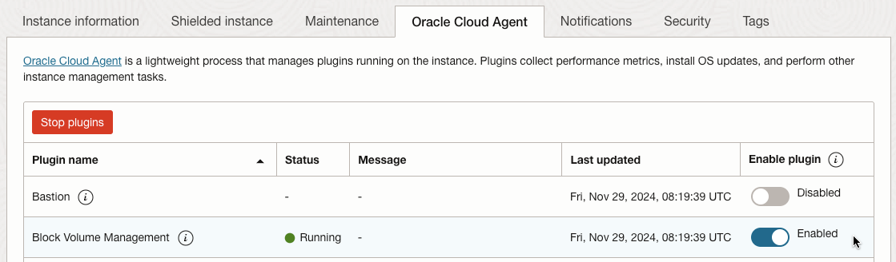
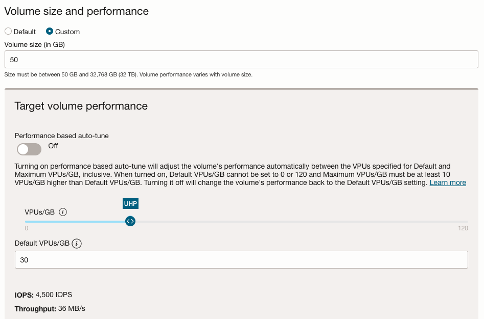
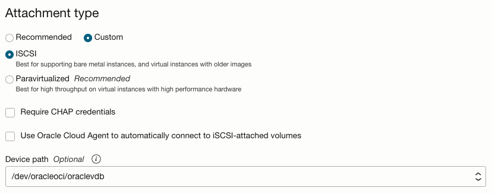
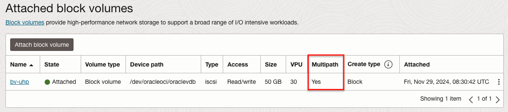

3.6.8 Ultra High Performance 레벨 사용하기
3.6.1 Block Volume 생성하기 설명한 것 처럼 Block Volume을 생성할 때 볼륨 성능(IOPS/GB)을 조절할 수 있습니다. 이 중에서 제일 높은 볼륨 성능을 사용하기 위해서는 추가적인 설정이 필요합니다. 여기서는 필요한 설정과 실제 성능을 확인해 보겠습니다.
-
Lower Cost: 스트리밍, 로그 처리 및 데이터 웨어하우스와 같은 대규모 순차 I/O가 있는 처리량 집약적 워크로드에 권장됩니다. 비용은 스토리지에 대한 비용뿐이며 추가 VPU 비용은 없습니다. 이 옵션은 블록 볼륨에만 사용할 수 있으며 부트 볼륨에는 사용할 수 없습니다.
-
Balanced: 신규 및 기존 블록 및 부트 볼륨에 대한 기본 성능 수준이며 대부분의 워크로드에 대해 성능과 비용 절감을 고려한 기본 성능을 제공합니다. 이 옵션을 사용하면 매월 GB당 10개의 VPU를 구매하게 됩니다.
-
Higher Performance: 보다 높은 I/O 요구 사항이 있는 워크로드에 권장됩니다. 이 옵션을 사용하면 매월 GB당 20개의 VPU를 구매하게 됩니다.
-
Ultra High Performance: I/O 요구 사항이 가장 높고 가능한 최고의 성능이 필요한 워크로드에 권장됩니다. 이 옵션을 사용하면 GB당 월 30 ~ 120 VPU 중에서 구매할 수 있습니다.
- Performance Characteristics 기준 VPU당 성능은 아래와 같습니다.
Volume Performance Units (VPUs) IOPS per GB Max IOPS per Volume Size for Max IOPS (GB) KBPS per GB Max MBPS per Volume 30 90 75,000 833 720 880 40 105 100,000 952 840 1,080 50 120 125,000 1,042 960 1,280 60 135 150,000 1,111 1,080 1,480 70 150 175,000 1,167 1,200 1,680 80 165 200,000 1,212 1,320 1,880 90 180 225,000 1,250 1,440 2,080 100 195 250,000 1,282 1,560 2,280 110 210 275,000 1,310 1,680 2,480 120 225 300,000 1,333 1,800 2,680
- Performance Characteristics 기준 VPU당 성능은 아래와 같습니다.
Ultra High Performance를 사용하기 위해서는 컴퓨트 인스턴스에 부착시 multipath가 활성화되어야 하며, 활성화를 위해 필요사항이 있습니다.
-
아래는 iSCSI 기준입니다. Paravirtualized 기준은 관련 문서를 참조합니다.
-
Multipath-Enabled iSCSI Attachments
-
Supported Compute Shapes for Multipath-Enabled iSCSI Attachments
- 전체 지원 Shape 중 일부입니다. 많이 사용하는 아래 2가지를 보면, 16 OCPU 이상에서만 Ultra High Performance을 지원합니다.
Shape Supports Ultra High Performance (UHP) VM.Standard.E5.Flex Yes (≥16 OCPUs)No (<16 OCPUs) VM.Standard.E4.Flex Yes (≥16 OCPUs)No (<16 OCPUs) -
Supported Images for Multipath-Enabled iSCSI Attachments
- Paravirtualized 문서를 보면, Oracle Linux, Ubuntu, CentOS, Windows를 지원합니다.
- iSCSI 기준으로는 리눅스 기반 이미지만 제공한다고 표시되어 있습니다. Oracle Linux는 지원하는 것으로 보이며, Ubuntu, CentOS는 확인이 필요해 보입니다.
-
Ultra High Performance 사용하기
-
Compute 인스턴스를 생성합니다.
- OS: Oracle Linux 8
- Shape: VM.Standard.E5.Flex, 16 OCPU
-
생성된 Compute 인스턴스의 Block Volume Management Plugin을 활성화 합니다.
참조 - Enabling the Block Volume Management Plugin
-
Compute 인스턴스의 OCID 또는 Compute 인스턴스가 속한 Compartment의 OCID를 사용하여 Dynamic Group을 생성합니다.
# my-inst-dynamic-group Any {instance.id = 'ocid1.instance.oc1.ap-chuncheon-1..<instance_OCID>'} -
IAM Policy를 생성에서 생성한 Dynamic Group에 필요한 권한을 부여하여 Compute 인스턴스에서 인스턴스 정보 및 Volume 부착관련 권한을 부여합니다. 더불어 Compute 인스턴스는 Internet Gateway 또는 Service Gateway를 통해 관련 정보에 접근할 수 있어야 합니다.
Allow dynamic-group my-inst-dynamic-group to use instances in compartment <compartment_Name> Allow dynamic-group my-inst-dynamic-group to use volume-attachments in compartment <compartment_Name> -
Compute 인스턴스의 상세 화면으로 이동합니다. Oracle Cloud Agent 탭에서 Block Volume Management을 활성화하고, Running 상태가 되는 것을 확인합니다.

-
Running 상태가 되지 않는 경우, Dynamic Group, IAM Policy 설정이 맞는지 확인하고, Compute 인스턴스에 SSH로 접속하여 로그를 확인합니다.
tail -f /var/log/oracle-cloud-agent/plugins/oci-blockautoconfig/oci-blockautoconfig.log
-
-
-
사용할 Block Volume을 생성하니다. 목표 성능을 UHP 구간내에 원하는 값으로 설정합니다.
-
용량: 50GB
-
볼륨 성능: UHP - 30 VPUs/GB
-
VPU 30은 GB당 90 IOPS 이기 때문에 용량 50GB 기준 4,500 IOPS가 나옵니다.

-
-
Compute 인스턴스의 상세 화면으로 이동합니다. Block Volume 부착화면으로 이동합니다.
-
iSCSI로 Device path를 지정하여 Compute 인스턴스에 부착합니다.

-
-
Block Volume이 부착되고 Multipath가 활성화(Yes)된 것을 확인합니다.

-
Compute 인스턴스에 SSH로 접속합니다.
-
Device Path로 부착된 것을 조회합니다.
$ ls -l /dev/oracleoci/oraclevdb lrwxrwxrwx. 1 root root 18 Nov 29 08:31 /dev/oracleoci/oraclevdb -> /dev/mapper/mpatha -
매핑된 이름으로 조회합니다. Multipath 활성화된 것을 확인할 수 있습니다.
$ sudo multipath -ll /dev/mapper/mpatha mpatha (360bfebb15db14712a6e1fb57f7ea4b27) dm-2 ORACLE,BlockVolume size=50G features='4 queue_if_no_path retain_attached_hw_handler queue_mode bio' hwhandler='0' wp=rw `-+- policy='queue-length 0' prio=1 status=active |- 7:0:0:2 sdb 8:16 active ready running |- 8:0:0:2 sdc 8:32 active ready running |- 9:0:0:2 sdd 8:48 active ready running |- 10:0:0:2 sde 8:64 active ready running `- 11:0:0:2 sdf 8:80 active ready running -
포맷합니다.
$ sudo mkfs -t xfs /dev/mapper/mpatha meta-data=/dev/mapper/mpatha isize=512 agcount=4, agsize=3276800 blks = sectsz=4096 attr=2, projid32bit=1 = crc=1 finobt=1, sparse=1, rmapbt=0 = reflink=1 bigtime=0 inobtcount=0 data = bsize=4096 blocks=13107200, imaxpct=25 = sunit=0 swidth=0 blks naming =version 2 bsize=4096 ascii-ci=0, ftype=1 log =internal log bsize=4096 blocks=25600, version=2 = sectsz=4096 sunit=1 blks, lazy-count=1 realtime =none extsz=4096 blocks=0, rtextents=0 Discarding blocks...Done. -
마운트 할 디렉토리 생성
sudo mkdir /mnt/vol1 -
마운트합니다.
sudo mount /dev/mapper/mpatha /mnt/vol1 -
결과를 확인합니다.
$ df -h Filesystem Size Used Avail Use% Mounted on devtmpfs 7.7G 0 7.7G 0% /dev tmpfs 7.7G 0 7.7G 0% /dev/shm tmpfs 7.7G 9.1M 7.7G 1% /run tmpfs 7.7G 0 7.7G 0% /sys/fs/cgroup /dev/mapper/ocivolume-root 36G 11G 25G 31% / /dev/sda2 1014M 360M 655M 36% /boot /dev/mapper/ocivolume-oled 10G 171M 9.9G 2% /var/oled /dev/sda1 100M 6.0M 94M 6% /boot/efi tmpfs 1.6G 0 1.6G 0% /run/user/986 tmpfs 1.6G 0 1.6G 0% /run/user/1000 /dev/mapper/mpatha 50G 389M 50G 1% /mnt/vol1 -
필요하면 인스턴스 재시작에도 자동으로 마운트되도록 /etc/fstab을 수정합니다.
성능 확인하기
-
Compute 인스턴스에 SSH로 접속합니다.
-
FIO를 설치합니다.
sudo dnf install fio -y -
IOPS 테스트 중 랜덤 읽기를 실행합니다.
sudo fio --filename=/dev/mapper/mpatha --direct=1 --rw=randread --bs=4k --ioengine=libaio --iodepth=256 --runtime=120 --numjobs=4 --time_based --group_reporting --name=iops-test-job --eta-newline=1 --readonly-
실행결과 아래와 같이 실제 4500 IOPS 내외가 나오는 것을 볼 수 있습니다.
$ sudo fio --filename=/dev/mapper/mpatha --direct=1 --rw=randread --bs=4k --ioengine=libaio --iodepth=256 --runtime=120 --numjobs=4 --time_based --group_reporting --name=iops-test-job --eta-newline=1 --readonly iops-test-job: (g=0): rw=randread, bs=(R) 4096B-4096B, (W) 4096B-4096B, (T) 4096B-4096B, ioengine=libaio, iodepth=256 ... fio-3.19 Starting 4 processes Jobs: 4 (f=4): [r(4)][2.5%][r=17.6MiB/s][r=4515 IOPS][eta 01m:58s] Jobs: 4 (f=4): [r(4)][3.3%][r=17.5MiB/s][r=4486 IOPS][eta 01m:57s]
-
참고
- Ultra High Performance
- Configuring Attachments to Ultra High Performance Volumes
- Troubleshooting the Block Volume Management Plugin
- Sample FIO Commands for Block Volume Performance Tests on Linux-based Instances
이 글은 개인으로서, 개인의 시간을 할애하여 작성된 글입니다. 글의 내용에 오류가 있을 수 있으며, 글 속의 의견은 개인적인 의견입니다.